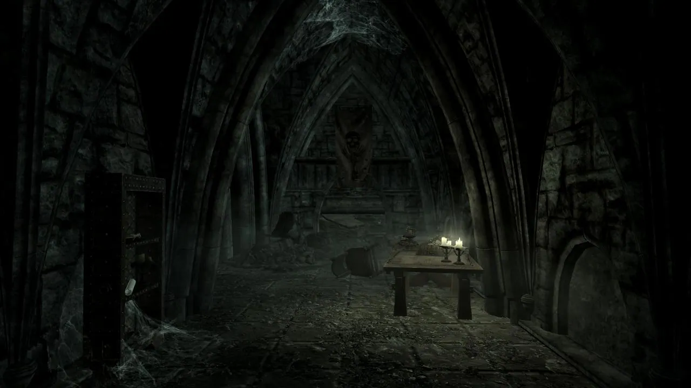

Skyrim: Undeath
My solo Skyrim expansion: a new questline, dungeons and transformation magic, downloaded nearly 1.6 million times.
- Studio
- Solo project
- Platform
- PC · Skyrim mod
- Role
- Designer, scripter & producer
- When
- Jan 2012 – May 2013
- 1.6M
- downloads across Classic & Remastered
- 3–5h
- of new content
- Mod of the Week
- PC Gamer
Undeath adds roughly 3–5 hours of new content to The Elder Scrolls V: Skyrim: a new questline with multiple endings, new dungeons, upgradeable player homes and custom transformation spells. It was featured on PC Gamer and in Skyrim Nexus's 'Mod of the Month' list, and has been downloaded nearly 1.6 million times across its Classic and Remastered editions.
It began as a personal mod and was polished for full release. I designed, scripted and built all of the content myself, and worked with a composer and voice actors to add a bespoke score and fully voiced NPCs. I also made the trailer and promotional material, with voice-over by Matthew Wade and music by León van der Stadt.
Video